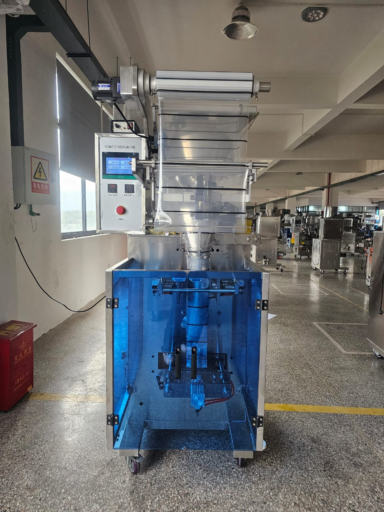
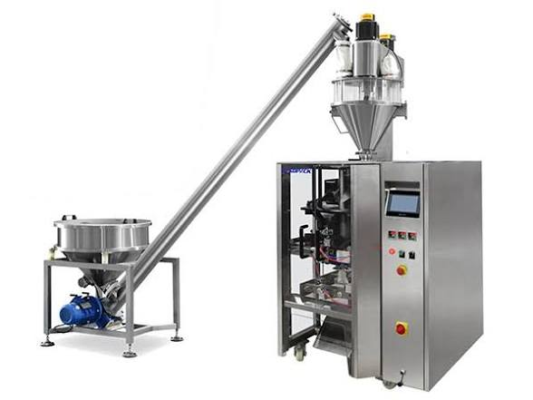
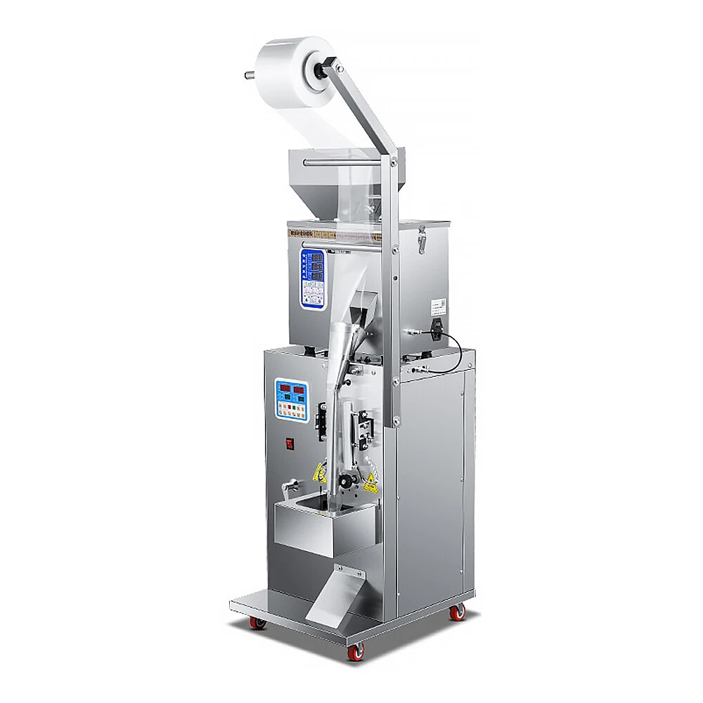
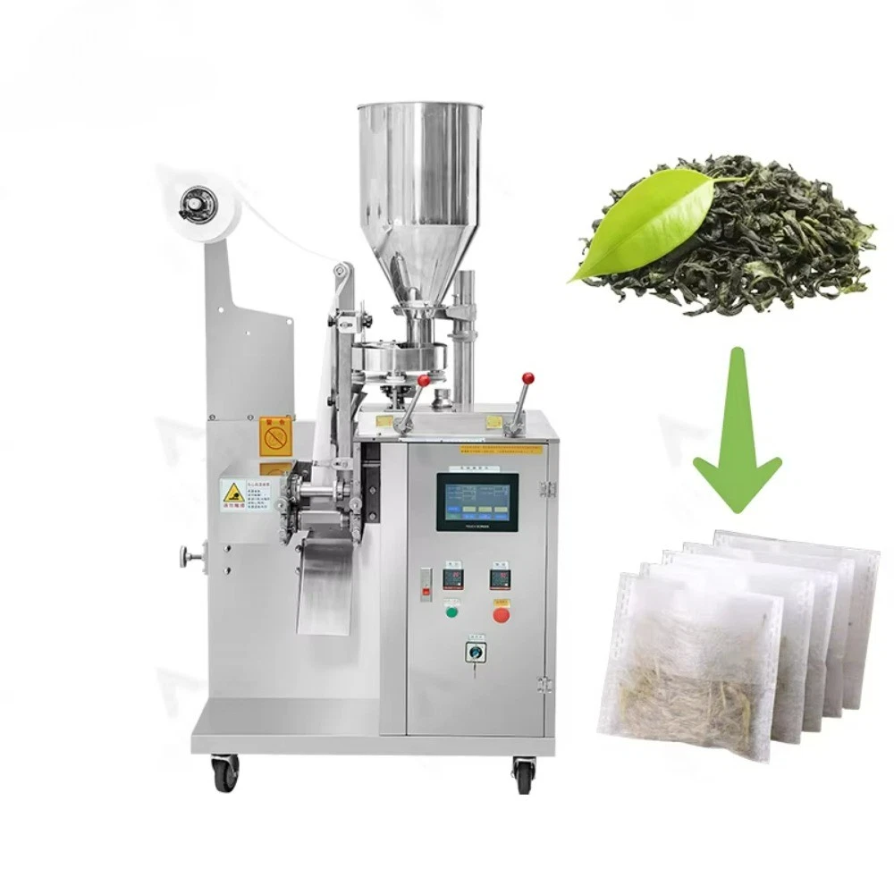
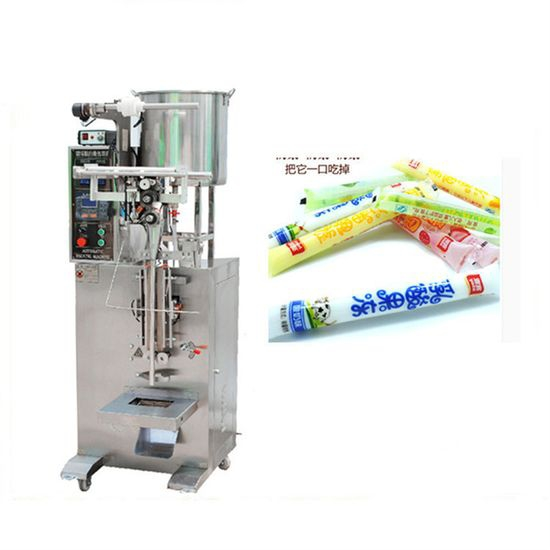
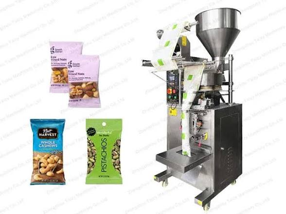
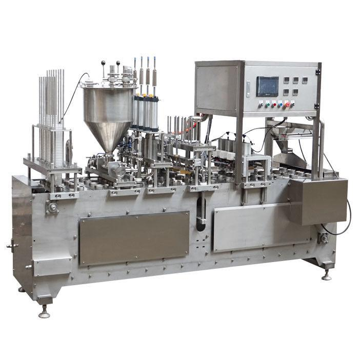

01 • PACKAGING
VFFS & Packaging Machinery
Packaging solutions for different products and production requirements.

GRANULEAdd your photo
Granular Packaging
Designed for packaging products such as rice, beans, groundnuts, chin-chin and other granular materials. These machines help businesses achieve organised, consistent packaging in different pack sizes, making them suitable for food processors, distributors and growing production businesses.

POWDERAdd your photo
Powder Packaging
An ideal packaging solution for flour, powdered milk, spices and other suitable powdered products. Designed to support accurate product filling and neat package formation, these machines help manufacturers improve packaging consistency and streamline their production process.

SPICESAdd your photo
Spice Packaging
Suitable for packaging ground pepper, curry powder, seasoning blends and other dry spice products. These machines provide a practical solution for spice manufacturers looking to present their products in clean, properly sealed and market-ready packs.

TEA BAGAdd your photo
Tea Bag Packaging
Designed for tea processing businesses that require convenient individual tea-bag packaging. This equipment supports organised packaging operations and helps manufacturers prepare their tea products for retail distribution and wider market access.

LIQUID / PASTEAdd your photo
Liquid & Paste Packaging
Suitable for compatible liquid and semi-liquid products such as sauces, pastes, milk and other formulated products. These machines provide an organised filling and sealing solution for businesses that need convenient, securely packaged products.

MILK / OILAdd your photo
Milk & Oil Packaging
Designed for packaging liquid products such as milk and edible oil into convenient sachets. A suitable solution for food and beverage manufacturers seeking a consistent packaging process, with equipment selection based on product properties and the required pack size.

SNACKSAdd your photo
Snack & Cheese-Ball Packaging
Suitable for packaging snacks, cheese balls and other lightweight solid food products. These packaging systems help food businesses prepare attractive retail packs while supporting a more organised and efficient packaging operation.

CUP YOGURTAdd your photo
Cup Yogurt Packaging
Designed for yoghurt and similar products packaged in cups. The equipment supports cup-filling and packaging operations, helping yoghurt manufacturers prepare products for retail outlets, supermarkets and other distribution channels. Specific filling and sealing arrangements depend on the machine model.